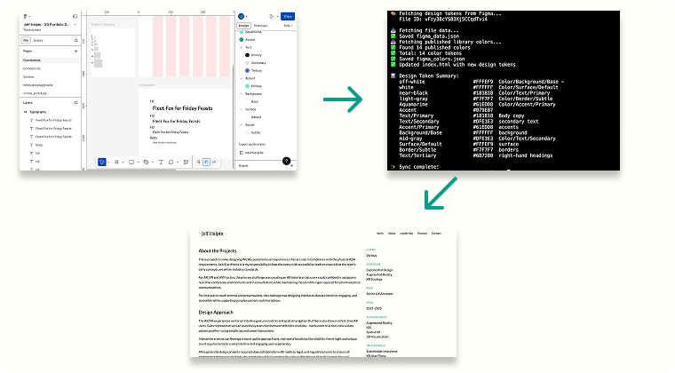

An automated workflow that syncs design tokens from Figma to code, keeping the design system and front-end implementation in perfect alignment.

Keeping design tokens synchronized between Figma and code is a persistent challenge in design-development workflows. Manual updates are error-prone, time-consuming, and often lead to drift between what designers specify and what gets implemented. A color change in Figma might take days to propagate to the codebase, or worse, get transcribed incorrectly.
For this portfolio project, I wanted a single source of truth: update colors in Figma, run a command, and have the code update automatically. No copy-pasting hex values, no version mismatches.
I built a Node.js script that connects to the Figma API, extracts all published color styles from my design system file, and automatically updates the Tailwind CSS configuration in my HTML files. The entire sync takes seconds and eliminates manual transcription errors.
The script walks Figma's document tree to find nodes with style IDs, extracts RGB values, converts them to hex codes, and generates a Tailwind-compatible color configuration. It also saves JSON files for reference and debugging.
During development, I discovered that Figma's API requires the X-Figma-Token header rather than the more common Authorization: Bearer pattern. This debugging experience reinforced the importance of reading API documentation carefully and testing authentication flows early.
The tool has zero external dependencies beyond Node.js itself, making it portable and easy to integrate into any project. It supports both published library colors and document-level style extraction as a fallback.
This project showcases API integration, design systems knowledge, automation and tooling, documentation, and problem-solving. It bridges the gap between design and development in a practical, reusable way.
Personal Project
Design Systems
Automation
API Integration
Front-end Development
Developer / UX Engineer
2026
Node.js
Figma API
Tailwind CSS
JavaScript
Sync Script
Documentation
GitHub Repository